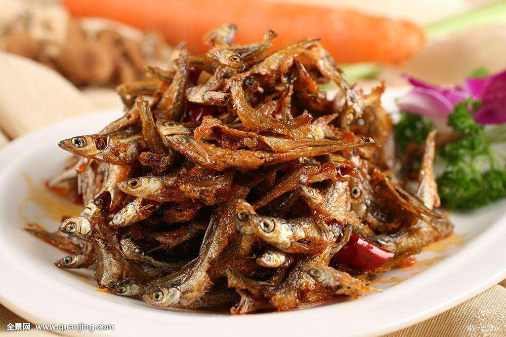
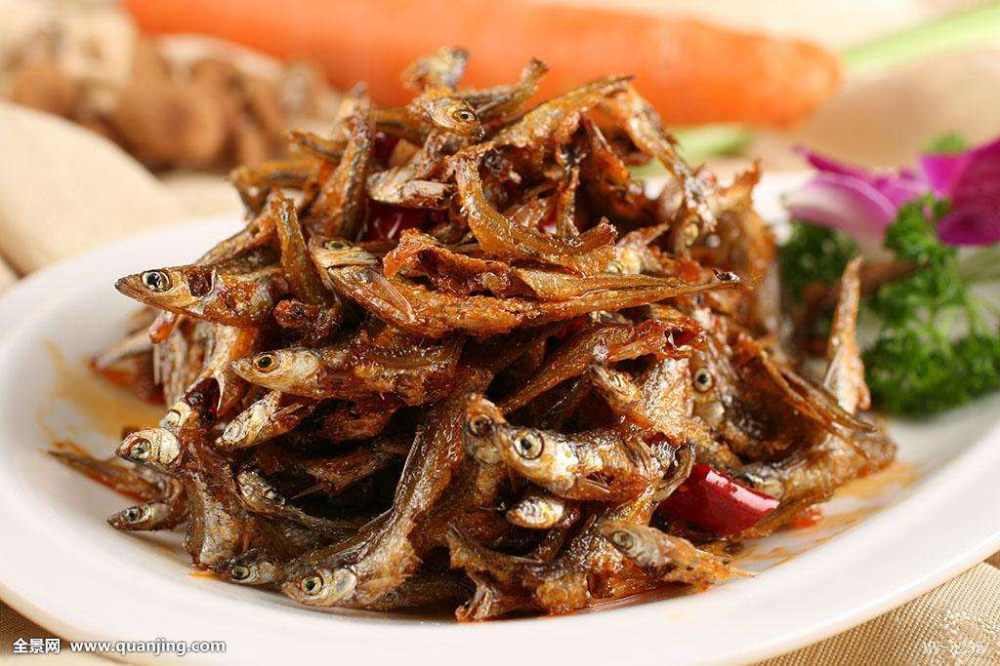
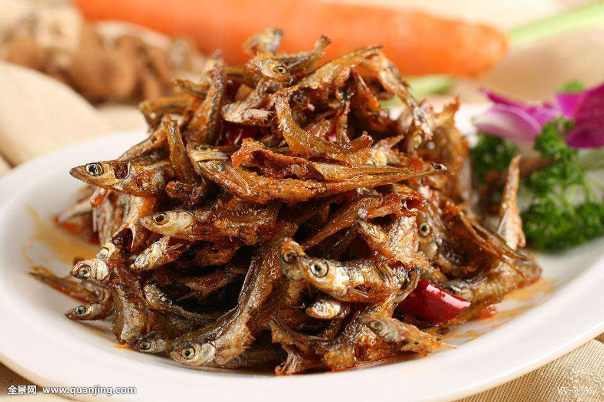

汤瑞仁，女，1930年3月出生，现任湖南韶山毛家饭店发展有限公司董事长，韶山毛家饭店总经理，湖南省工商联执委，湘潭市工商联执委，市妇联执委，市个私协会副会长，韶山市政协常委，韶山毛泽东纪念园总顾问。
汤瑞仁家与毛泽东故居仅一塘之隔。和所有韶山人一样，她对毛主席除了有对伟人的崇敬之情外还有一种天然的情感。她解放前逃荒要饭，受尽苦难，是共产党、毛主席领导全国劳苦大众翻身得解放。解放后，她参加组织了韶山第一个妇女互助组，后又率先进入初级社。1987年她创办了毛家饭店，二十多年来，毛家饭店越办越红火，已在全国开设连锁分店二百多家，共计安排下岗职工再就业二万余人，取得了良好的经济效益和社会效益。 汤瑞仁开店赚了钱，成了韶山劳动致富的带头人。她致富不忘报效国家，不忘回报社会。二十多年来，她除了积极上交国家税费外，还主动做好事善事，热心于公益事业和就困扶贫救灾。她资助千多名失学儿童重返校园，并收养百多名孤儿，从1949年开始至今，她以慰问部队战士为己任，视孤寡老人为亲人。数十年来，她为多项公益事业，扶贫救灾捐款累计达数百万元。 “毛主席领导我们翻了身，邓小平领导我们致了富！”她以自己的亲身经历，宣扬了两位伟人的丰功伟绩和改革开放的成果。作为我国改革开放三十年的先进典型，非公有制经济精神文明的一面旗帜，她的高尚情操和中华民族传统美德博得了全社会的赞扬。她的事迹在中央电视台、人民日报、新华社及美国、德国、新加坡等多国的国家级电视媒体和报刊宣传报道。

1914年，毛泽东进入湖南第一师范学习。据他的同班同学周世钊和蒋竹如回忆，该校每个周六打“牙祭”吃红烧肉，用湘潭酱油（老抽）加冰糖、料酒、大茴（八角）慢火煨成，肉用带皮的“五花三层”，八人一桌，足有四斤肉。从这时起，毛泽东就爱上了红烧肉这个菜。 早年，毛泽东吃的菜里是可以放酱油的。后来有一次，在酱油作坊里看到酱油制作过程中有不卫生的情况，就再也不碰酱油了。 进了北京之后，毛泽东所有吃的菜里，都不让放酱油。中南海前“御厨”程汝明琢磨出解决办法，就是用糖色加盐，代替酱油为肉着色调味，这样烹制的红烧肉咸鲜不失、甜味兼得，毛泽东尝过之后很是受用。
火焙鱼是湖南的传统名菜，属于湘菜系。将小鱼去掉内脏，用锅子在火上焙干，冷却后，以谷壳、花生壳、桔子皮、木屑等薰烘而成的鱼。这种鱼不仅好吃，也便于携带和收藏。更因火焙鱼是毛主席生前最爱吃的食品之一而名扬四海，现在成了一些宾馆、酒店的桌上的佳肴。火焙鱼在湖南到处可见，但是湖南醴陵官庄水库地区的火焙鱼最为经典，通过改进的加工工艺，使得鱼味道更香，鱼肉更有嚼劲。官庄水库火焙鱼是当地最具特色风味的农产品，其风味独特，香甜可口，促进食欲，深受喜爱，是火焙鱼中的极品。俗话说，鱼吃跳。营养专家加上了一句：“鱼吃小。”小鱼比大鱼更有营养。